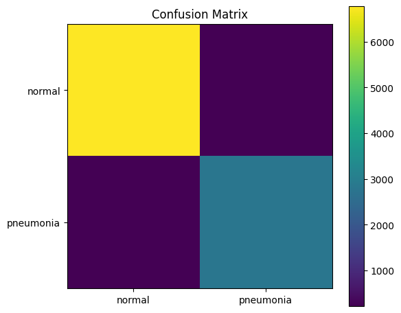
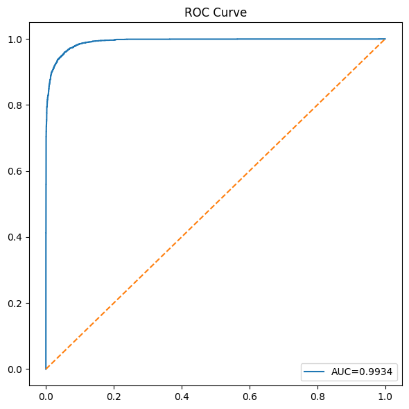
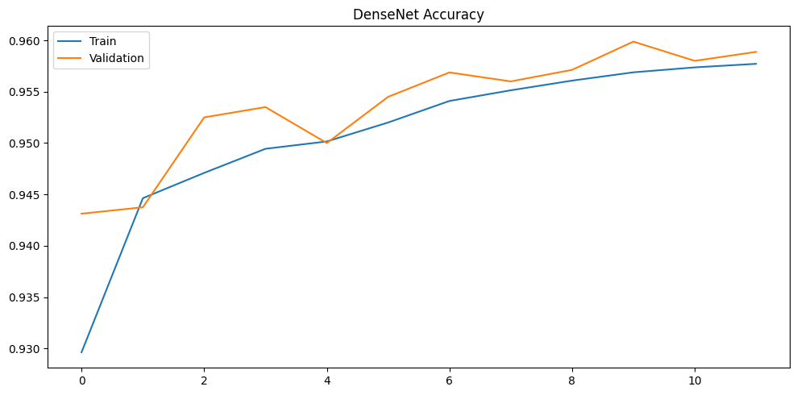

INPUT
Choose an image
Synthetic sample imagesSafe portfolio examples
Load an image after the model is ready.
CNN PROJECT 03 · GITHUB PAGES + TENSORFLOW.JS
Upload an image or select a bundled synthetic sample. TensorFlow.js loads the converted DenseNet121 model, performs preprocessing and inference locally, and shows class probabilities without sending the image to a server.
The bundled artifact was trained on a Fashion-MNIST-derived binary proxy, not clinical chest X-rays. Labels are normal_like and pneumonia_like. Do not upload private or identifiable medical images, and never use this output for diagnosis or treatment.
INPUT
Load an image after the model is ready.
OUTPUT
Select an image and run the model to view the predicted proxy class, confidence, probabilities, and runtime.
RECORDED EXPERIMENT
These values document the original experiment only. They must not be described as clinical pneumonia-detection performance.



MODEL DESIGN
RGB conversion, 28 × 28 compatibility resize, then 96 × 96 browser tensor resize.
ImageNet-style channel normalization using the same mean and standard deviation as the training model.
Dense connections reuse features and support stable gradient flow during transfer learning.
Global average pooling, Dense(256), batch normalization, dropout, and a two-class softmax output.
DEPLOYMENT
This browser app demonstrates model engineering, conversion, deployment, and responsible AI communication. It does not establish clinical validity. A real medical classifier requires a licensed clinical dataset, patient-level splitting, external validation, bias analysis, calibration, regulatory review, and qualified medical oversight.